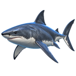
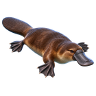
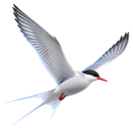
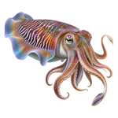
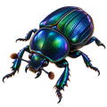
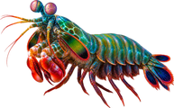
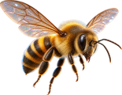
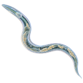

Every animal is issued a different slice.
The beam runs the length of the deck. Each creature hovers over the part of it that reaches its senses, and that part is drawn on the beam in the light's own colours. Tap one, or pick it from the roster, and the ship flies you over.
Vision · photoreception
A pigment molecule absorbs a photon and the eye builds a picture, in whatever band evolution tuned it to.
Radiant heat · absorbed and felt
The organ absorbs infrared radiation and feels the microscopic warming or mechanical change it causes. Real electromagnetic detection, but not colour seen the way an eye sees red or violet. For the heat-sensers, the band on the beam is the radiation their target emits: a warm body, a wildfire, an ankle.
Wavelength
short edge to long edge
Frequency
long edge to short edge
Photon energy
what one photon carries, low to high
Width
Borrow a pair of eyes. Or a pit organ.
A flower, a mouse, a person, a stone, on a lawn in the sun. The ship lights the scene with a 5778 K sun and every object's own warmth, then keeps only the light that falls inside one creature's band and paints it in the beam's colours. Switch off the sun and see who is left in the dark.
How the ship computes it. Each object has a reflectance curve (textbook shapes: a yellow petal whose tips reflect ultraviolet and whose centre, the nectar guide, absorbs it; a leaf with chlorophyll's green bump and the near-infrared red edge; brown fur; mid-tone skin; grey stone) and a surface temperature: 34 °C for skin as the mosquito entry says, 32 °C for the mouse (a mouse's warmest skin runs about 5 °C below its 37 °C core on a thermal camera), 20 °C for everything else, emissivity 0.95 to 0.97. Sunlight is a 5778 K blackbody at Earth's distance with no atmosphere, 1367 W/m²; each object's own glow is Planck's law at its temperature. The ship integrates reflected plus emitted radiance across the creature's band, weighted by photon count for the vision creatures (an eye counts photons) and by energy for the heat-sensers and the Visitor (a heat organ feels power). Inside 380 to 750 nm the colours are the true spectral colours, balanced so a perfect white under the same light reads white; outside it they are the beam's translation colours for that band. Exposure is set so the brightest object is full bright, as an eye adapts; a night scene carrying less than a millionth of the day's signal is shown black. It is a schematic, not a retina: no opsin curves, no lens, no brain.
Electromagnetic senses with no wavelength.
Static and slowly changing electric or magnetic fields are electromagnetic, certainly, but they are not propagating light, so they have no place on a wavelength ruler. Assigning a shark a wavelength range would be physics wearing a counterfeit mustache. These senses get their own wing.

Shark & ray
Ampullae of Lorenzini read the faint electric fields leaking from every living body: nerve and muscle activity betrayed through seawater. Weakly electric fish go further: they emit their own field and read how nearby objects distort it, an electric flashlight for the dark.

Platypus
The bill is packed with electroreceptors. Hunting with eyes, ears and nostrils closed, a platypus finds prey underwater by the electric fields of their muscle twitches, cross-referenced with touch to judge distance.

Migratory bird
Songbirds crossing continents read Earth's magnetic field for compass direction, and likely parts of their map. The leading suspect is a quantum effect: magnetically sensitive radical pairs in cryptochrome proteins of the eye, which would make the compass something a bird sees.
A second property of the same photons.
Light is a wave in the electric field, and that field swings across the direction of travel: up-and-down, side-to-side, or any angle between. That angle is polarization, and nothing in a human eye registers it. The sky is full of it all the same. Air scatters sunlight most strongly at right angles to the sun (the same 1/λ⁴ scattering that makes it blue), and light scattered through a right angle comes out almost fully polarized, so a great ring of polarized sky runs 90° from the sun all day. Some eyes read that ring as a compass; some read polarization the way yours reads colour.

Cuttlefish
Colour-blind, and yet it sees a channel you cannot: cuttlefish tell polarization angles apart to about 1°, the finest polarization vision measured in any animal. Transparent prey that vanish in plain light stand out in polarization contrast, and the skin can flash polarized patterns invisible to most of the reef.

Dung beetle
Rolls its ball in a dead-straight line away from the pile by reading the polarization pattern of the sky through a special strip along the top of each eye. The first animal shown to steer by polarized moonlight, a million times fainter than the day sky; on moonless nights it switches to the glow of the Milky Way.

Mantis shrimp
Reads linear polarization like the cuttlefish, and then goes one further: the only animal known to detect circular polarization, light whose field corkscrews as it travels. It uses the channel for private signalling, and its eye has been copied into camera filters.

Honeybee & desert ant
Karl von Frisch found in 1949 that bees steer by the sky's polarization when the sun is hidden; a patch of blue sky is enough. Desert ants of the genus Cataglyphis run the same compass to walk hundreds of metres out over featureless sand and straight back to a centimetre-wide nest hole.
An edge case, halo attached.

Laboratory only
Laboratory experiments have found acute responses to X-rays in several animals: most strikingly, C. elegans worms perform an immediate avoidance maneuver, mediated by LITE-1, a receptor protein otherwise tuned to ultraviolet. That is real, and it is not a naturally evolved, image-forming X-ray eye. File under experimental edge case, radiation-warning halo attached.